Aisology — Creator
KHONSHU
[ コンシュ ]
黒いカラスのような鳥が、白いフード付きコートを着たオリジナルキャラクター。
アニメーションスタンプとステッカーを制作しています。
About
キャラクターと制作者
コンシュは、制作者 goro のオリジナルキャラクターです。公式紹介文は「エジプトの月の神をルーツに持つ、Yattemiyo Toolsのマスコット。月夜と、新しい道具が生まれる場所に現れます。」キャラクターは初期デザインから展開され、最初のスタンプ作品「KhonshStamp2」（全40種）の原画とシートも下に掲載しています。現在のアニメーション作品では、いつも半眼で、感情は表情よりも身振りで表すのが特徴です。これまでに、日常のあいさつや感情表現を集めたアニメーションスタンプ全19種と、季節のコスチュームを着たGIPHYステッカー全24種（クリスマス12種・ハロウィン12種）を制作しました。すべての作品はこのページと下記の公式チャンネルで公開しています。2026年11月には原図をリニューアルし、3D調の全身デザインが新しい原画になりました。下の並びの先頭が新しい原画、その隣がこれまでの原画です。今後の制作は新しい原画を基準に進めます。
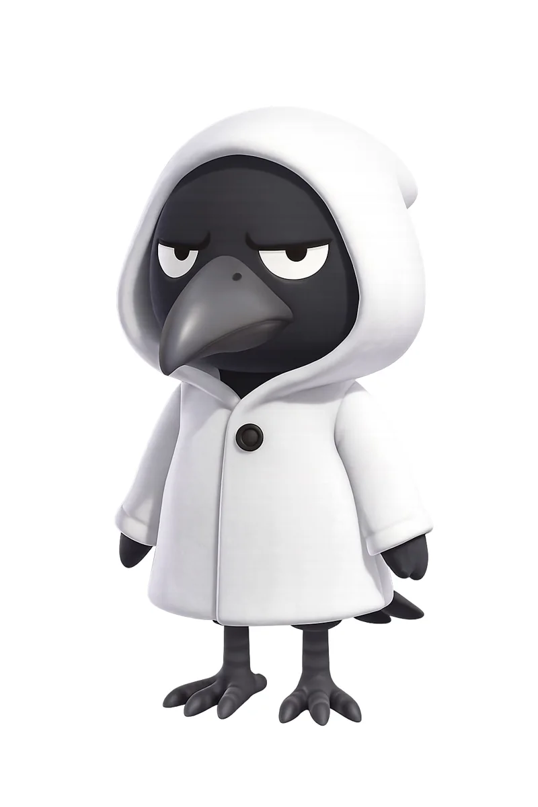

About — English
Khonshu is an original character created by goro, a Japan-based creator: a black, crow-like bird wearing a white hooded coat, known for half-lidded eyes and expressive gestures. Works include a 40-sticker set "KhonshStamp2" (shown here as artwork sheets), an animated stamp series (19 expressions) and 24 animated costume stickers published on GIPHY under the channel @konshu_goro. The GIPHY stickers on this page are original, non-commercial works. In November 2026 the master artwork was renewed: a full-body 3D-style design is now the official reference, shown first in the row above next to the previous master.
来歴 — コンス（Khonsu）
コンシュのモデルは、古代エジプトの月の神コンス（Khonsu）です。制作者のThreads紹介スレッドをもとに、その来歴をまとめます。
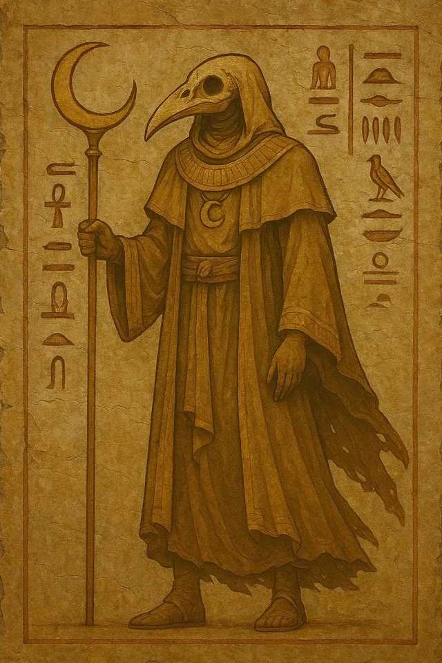
- 名前と意味：コンス＝「横切る者」。夜空を月の船で滑るように横切り、満月と三日月を操る月の守護神。
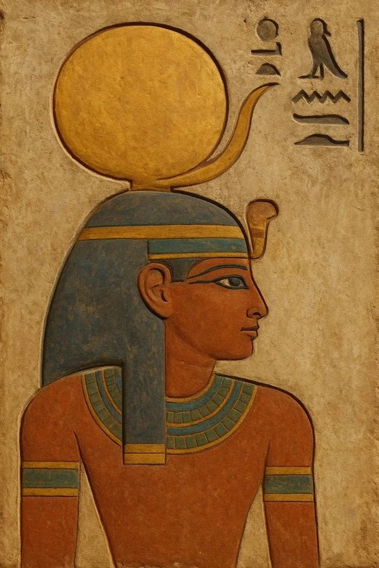
満月と三日月の冠を戴くコンス - 姿：少年の姿（包帯ミイラ風＋片側の髪）と、ハヤブサ頭に三日月＋満月の王冠を戴く姿の2スタイルが代表的。
- 得意技：満月＝ヒーリング（病や怪我の回復）、三日月＝邪気を祓うカッターモード。
- 役割とご利益：癒し・時間・豊穣・航海の守護。月の満ち欠けで暦を管理する時間の神で、夜間航海の守護者として信仰が厚かった。
- 家族：父は最高神アメン、母は女神ムト。テーベの三柱神のひとり。
父アメン 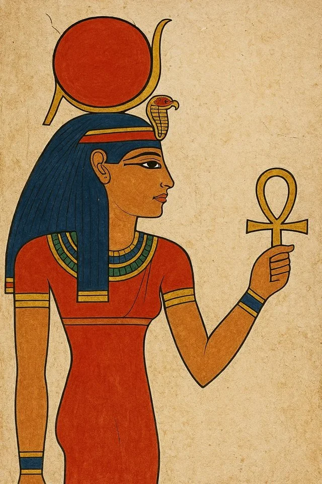
母ムト - 神殿：カルナック神殿の「コンス神殿」が月神信仰の拠点。
- 人々との関わり：病気や怪我の回復祈願、船旅や遠出の安全祈願で頼られ、王や高官も守護を求めた。農業や暦にも直結する、庶民にも身近な月神。
出典：「コンシュってなんぞや」Threads紹介スレッド（@goro_yattemiyo_、2025-08-10）
Gallery
ギャラリー
Threadsの投稿から集めた、いろいろな姿のコンシュです。カードを送ると別の姿が見られます。
Works 01
LINEスタンプ
コンシュ最初のスタンプ作品です。全40種のスタンプセット「KhonshStamp2」の原画とシートです。
スタンプシート（60種から40種を選定）
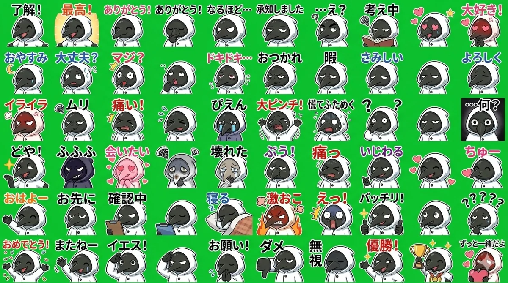
表情素材シート（27種）
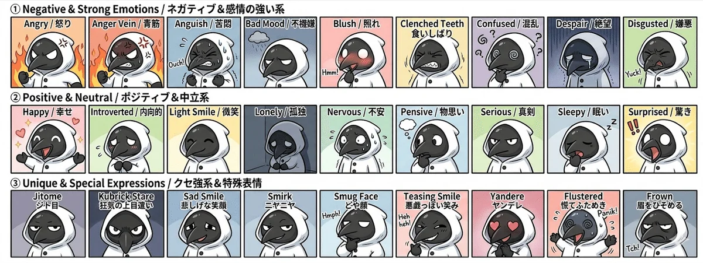
Works 02
GIPHYステッカー
コスチュームごとに6ポーズのループアニメーションで制作したステッカーです。各カードからGIPHYの作品ページへ移動できます。
Christmas — クリスマス（12種）
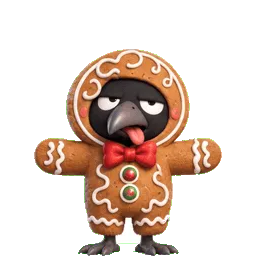
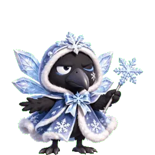
Halloween — ハロウィン（12種）
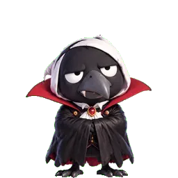
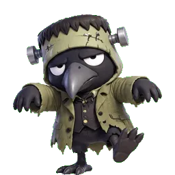
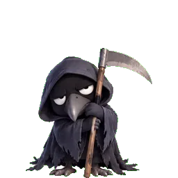
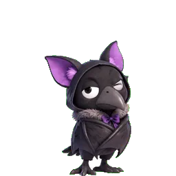
原画シート — ハロウィン
ハロウィンステッカーの原画シートです。左がいつもの半眼を保った通常版、右が表情のバリエーション版です。
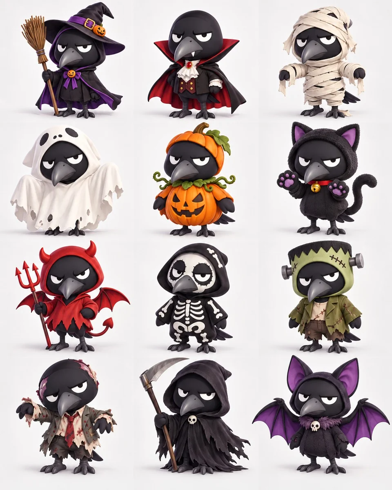
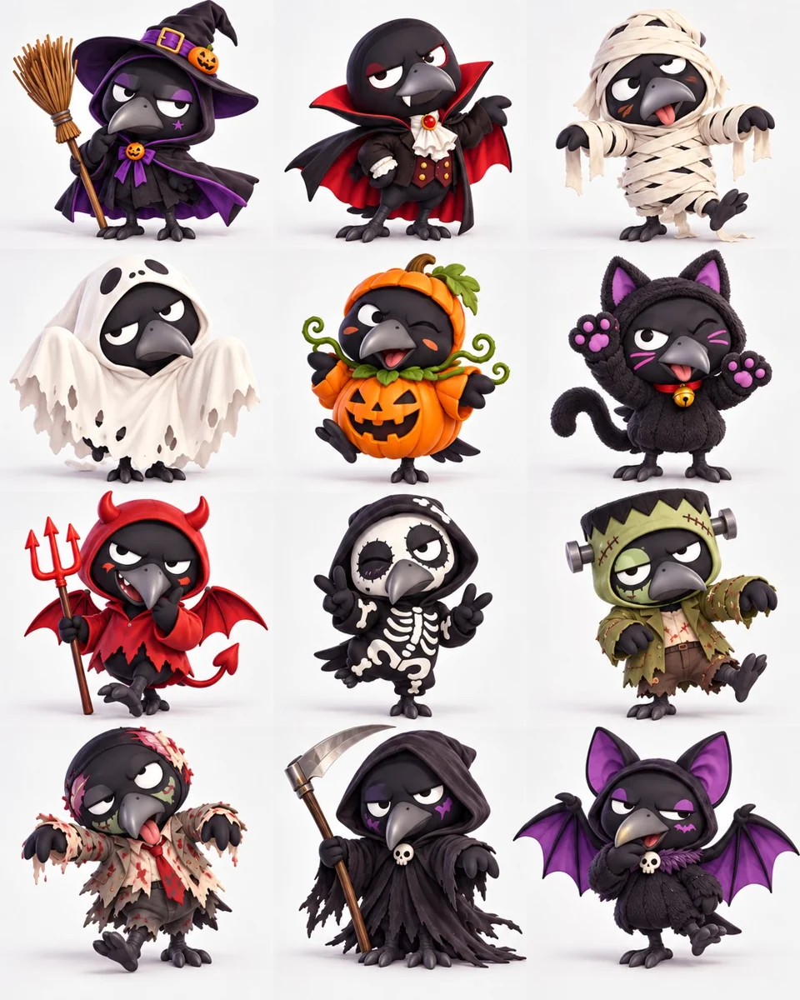
失敗作 — 透過消失
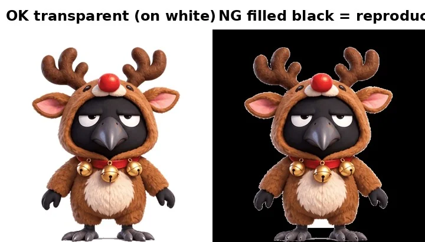
ノイズ除去フィルタの影響で、全24種の透過が失われて黒背景のステッカーになった失敗作です。GIPHYへのアップロード時に「No transparency detected」と弾かれて発覚し、透過を保持する方式で全種を作り直しました。当時のファイルは残っていないため、この画像は再現図です。
Works 03
アニメーションスタンプ
日常のあいさつと感情表現を集めたアニメーションスタンプシリーズ（全19種）。コンシュの「表情は変えず、身振りで伝える」表現がシリーズのテーマです。
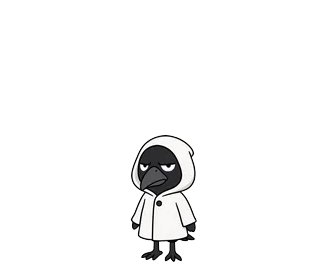
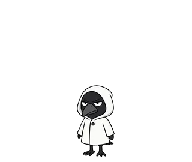
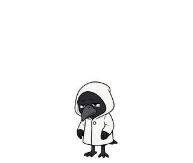
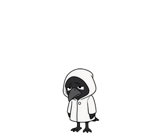
Works 04
初期シリーズ
コンシュのアニメーションスタンプは、ここから始まりました。喜ぶ・怒る・おじぎ・うなずきの4種です。いずれも初期の失敗作のため、失敗作マークを付けています。


Links